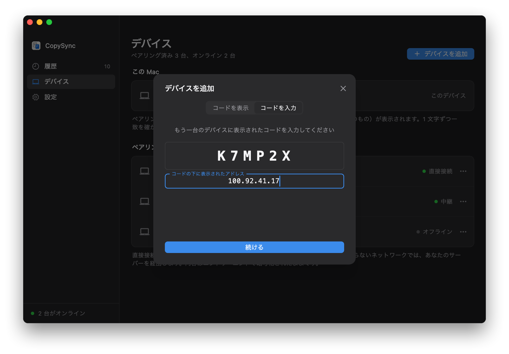

Tailscale でネットワークをまたぐ
グローバル IP がなく、サーバーも置きたくない？各コンピューターに Tailscale を入れ、ペアリング時に相手の Tailscale アドレスを入力すれば、自宅でも会社でも同期できます。
同じ LAN にあるように
Tailscale はデバイスをひとつのプライベートネットワークにまとめるツールです。同じアカウントでサインインしたデバイスには、100 で始まる固定のアドレスが割り当てられ、実際にどのネットワークにいてもそのアドレスで互いに届きます。PasteFerry はペアリング時に相手のこのアドレスを覚え、あとは同じネットワークにいるのと同じように直接つながります。
- サーバーは要らない。電源を入れたままのコンピューターも要りません。2 台が起動していて Tailscale につながっていれば同期します。
- アドレスの入力は一度だけ。Tailscale のアドレスは変わらないので、ペアリング時に一度入力すれば、あとは 2 台が自動でお互いを見つけます。
- 二重の暗号化。Tailscale の WireGuard トンネルの中を、PasteFerry 自身のエンドツーエンド暗号化接続が通ります。Tailscale にも内容は見えません。
始める前に
- Tailscale のアカウント
- 個人利用は無料で、Google、Microsoft、GitHub、Apple のアカウントでサインインできます。すべてのデバイスで同じアカウントを使います。
- すべてのコンピューターに Tailscale
- Windows、macOS、Linux 用のクライアントがあります。PasteFerry を使うコンピューターすべてに入れ、接続したままにします。
- PasteFerry を入れておく
- 各コンピューターにアプリを入れ、バックグラウンド同期を有効にしておきます（はじめかた）。サーバーのアドレスは空欄のままで大丈夫です。
- ZeroTier でも可
- 各デバイスに固定の仮想アドレスを割り当てるツールなら同じ手順で使えます。ペアリング時にそのアドレスを入力します。ここでは Tailscale を例にします。
ステップ 1
各コンピューターに Tailscale を入れる
同期するコンピューターすべてに入れて、同じアカウントでサインインします。
- Tailscale の公式サイトから OS に合ったクライアントをダウンロードしてインストールします。Linux では
curl -fsSL https://tailscale.com/install.sh | shを実行してからsudo tailscale upを実行し、表示されたリンクを開いてサインインします。 - Tailscale を開いてサインインします。すべてのコンピューターで同じアカウントを使います。
- サインインすると、Tailscale の管理画面にすべてのデバイスが並び、それぞれに 100 で始まるアドレスが付いています。
| デバイス | Tailscale のアドレス | OS |
|---|---|---|
| macbook-pro | 100.88.20.5 | macOS |
| home-pc | 100.92.41.17 | Windows |
Tailscale をつないだままにする
- Windows：通知領域の Tailscale アイコンを右クリックし、「Preferences」で「Run unattended」をオンにすると、サインアウトしても接続が続きます。
- Mac：Tailscale がログイン時に開くようにしておきます。
- キーの有効期限をオフに：Tailscale は初期設定で 180 日ごとにデバイスの再サインインを求めます。ほとんど動かさないコンピューターは、管理画面の Machines ページでその行の右端のメニューから「Disable key expiry」を選べます。
ステップ 2
相手の Tailscale アドレスを調べる
ペアリングするもう一台で、Tailscale のアイコン（Mac はメニューバー、Windows は通知領域）をクリックすると、メニューにこのデバイスのアドレスが表示されます。ターミナルで tailscale ip -4 を実行しても分かります。
> tailscale ip -4 100.92.41.17
ここでは自宅の Windows の 100.92.41.17 を例にします。ご自分のアドレスに読み替えてください。
ステップ 3
ペアリング時にこのアドレスを入力
同じネットワークでのペアリングと同じで、アドレスをひとつ入力するだけです。
- 自宅の Windows で「デバイス」を開き、「デバイスを追加」をクリックして、6 桁のコードを控えます。
- 会社の Mac で「デバイスを追加」をクリックし、「コードを入力」に切り替えて入力します。続けて「別のサブネットにありますか？」をクリックし、
100.92.41.17を入力して「続ける」をクリックします。 - 両方の画面に同じ 2 行の指紋が表示されたら、照合して確定します。これで 2 台はどこにいても同期します。

2 台とも自宅にいるときは、PasteFerry が LAN の中で直接相手を見つけるので、データが遠回りすることはありません。
よくある質問
「直接接続」と表示されるのに遅い
PasteFerry の「直接接続」は、2 台が Tailscale のネットワーク上で直接つながっていることを指します。Tailscale 自身が 2 台を P2P でつなげないときは、遠くにあることもある DERP サーバーで中継します。
ターミナルで tailscale ping 相手のアドレス を実行し、via DERP なら Tailscale が中継中、via IP とポートなら P2P です。会社や学校のネットワークでは中継になりやすく、DERP サーバーを自分で立てるか、別のツールを試す方法があります。
ペアリングで相手が見つからない
まず両方で Tailscale がつながっているか確かめます。ターミナルで tailscale ping 相手のアドレス を実行し、応答があれば再度試してください。
ping は通るのに見つからないなら、相手のファイアウォールが止めている可能性が高いです。相手が Windows なら PasteFerry の「設定 → ローカルネットワーク」で「許可」をクリック、Mac なら「システム設定 → プライバシーとセキュリティ → ローカルネットワーク」で PasteFerry Daemon をオンにします。
すべてのコンピューターに Tailscale が必要ですか？
はい。入っていないコンピューターは 100 で始まるアドレスに届きません。同じネットワークにある 2 台なら不要です（同じネットワークでの手順）。
以前の手順で自宅にサーバーを置きました。まだ必要？
もう要りません。各コンピューターの「設定」でサーバーのアドレスを消し、自宅のコンピューターからサーバーをアンインストールしてください。ペアリング済みのデバイスはそのままです。残しておいても問題はなく、サーバーと Tailscale は併用できます。
Tailscale にコピーした内容は見えますか？
見えません。Tailscale の接続は WireGuard でエンドツーエンド暗号化され、その中を PasteFerry 自身の DTLS 暗号化接続が通ります。どちらの層も開けるのは 2 台のコンピューターだけです。Tailscale のサーバーが扱うのはデバイスの公開鍵とアドレスだけで、中継サーバーも暗号化されたパケットを転送するだけです。
Tailscale のアドレスは変わりますか？
通常は変わりません。アドレスはデバイスに付いていて、再起動やネットワークの変更でも同じです。デバイスを Tailscale から削除して追加し直したときだけ変わります。変わったときは、「デバイス」でそのデバイスのアドレスをもう一度入力します。
公開サーバーがあります。Tailscale は必要？
不要です。グローバル IP を持つマシンにサーバーを置き、すべてのコンピューターにそのアドレスを入力してください（公開サーバーでの手順）。
サーバーなしで、
クリップボードはあなたと一緒に。
バージョン 2.2.0、無料・オープンソース。macOS 13 以降、Windows 10・11、Linux（x64 と ARM64）。
同じネットワークでの手順に戻る